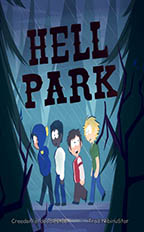
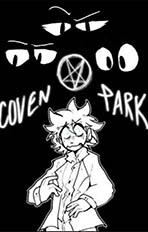
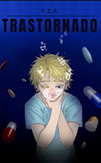

Comics
|  | HELL PARK |
||
Autor: doodlestab [Tumblr] |
|||
| Solo es un grupo de chicos tontos que hacen lo que mejor hacen los chicos tontos: jugar con las fuerzas que mejor se dejan manifestar, ¡por supuesto! Craig, Clyde y Token se meten en un gran problema con fuerzas que aún no logran comprender, el mundo esta lleno de demonios, pequeños diablillos rubios con personalidades inusuales. |
Apoyar al Artista
|  | Coven Park | South Park AU |
||
Autor: Kaitt_is_gay [Wattpad] |
|||
| Tweek Tweak es un joven con cualidades extrañas que en sus propias palabras hace que su vida sea miserable y los considera una "maldición". ¿Pero qué pasa cuando dos extraños desconocidos saben sobre sus poderes? ¿Qué es lo que tienen planeado para este chico? |
Apoyar al Artista
 |
Orphanage Park - South Park AU |
||
Autor: doodlestab [Instagram] |
|||
| Donde todos los chicos de South Park son huérfanos, y viven en un orfanato que pareceel infierno. |
Apoyar al Artista
Lecturas
|  | -TRASTORNADO- | CREEK |
||
Autor: user22406055 [Wattpad] |
|||
| Después de años en un tratamiento mal aplicado, Tweek terminó desarrollando un grado menor de psicosis que fue empeorando en el transcurso de un año. Tras un incidente, Tweek termina siendo aislado e internado en un Hospital Psiquiátrico donde tendrá que vivir su día a día después de que todos sus seres queridos le hayan dado la espalda. Craig resentido al ver la injusticia por la cual hicieron vivir a su pareja se enfoca en sus estudios convirtiéndose en psiquiatra para volver a ver a Tweek y ser él mismo quien lo cure para que pueda por fin tener una vida normal. Pero no estarán solos, ya que habrá un tercero que intentara a toda costa impedir que Tweek salga de aquellas 4 frías y blancas paredes. |
Apoyar al Artista